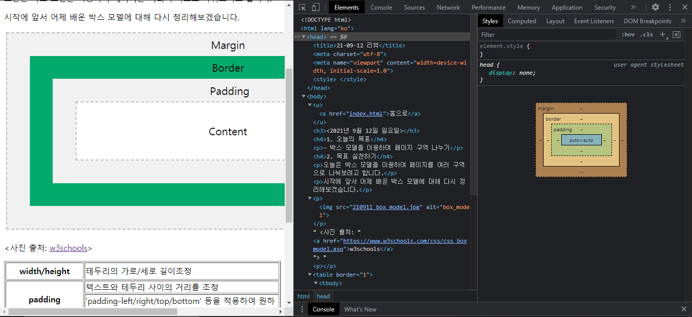
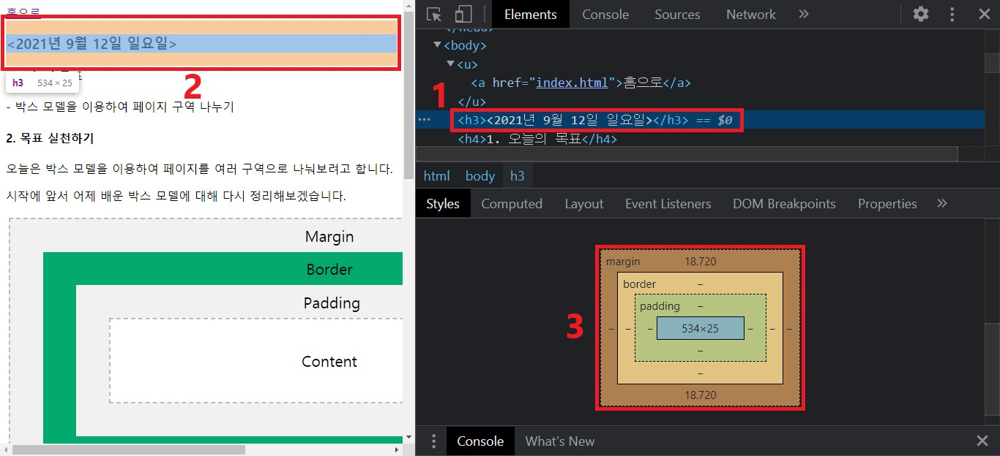

- 박스 모델 정리
- 페이지 검사 기능
내일부터는 딱딱했던 웹 페이지를 좀 더 세련되게 꾸며보려고 합니다.
그래서 내일을 위해, 오늘은 어제 배운 박스 모델을 다시 정리하는 시간을 가져보려고 합니다.
또, 코딩을 하는 데 있어 아주 유용한 기능을 하나 소개해드리려고 합니다.
그럼 박스 모델 정리부터 시작하겠습니다.
| width/height | 테두리의 가로/세로 길이 조정 |
|---|---|
| padding | 텍스트와 테두리 사이의 거리를 조정 |
| 'padding-left/right/top/bottom' 등을 적용하여 원하는 구역만 거리 조정 가능 | |
| border | 테두리의 종류, 색상, 굵기 등 변경 |
| 'border-left/right/top/bottom' 등을 적용하여 원하는 테두리 부분만 변경 가능 | |
| margin | 테두리 근처 여백 크기 조정 |
| 'margin-left/right/top/bottom' 등을 적용하여 원하는 구역의 여백 크기만 조정 가능 |
그리고 코딩을 하는 데 있어서 아주 유용한 기능을 하나 소개해드리겠습니다/
웹 페이지에서 우클릭 후 '검사'를 누르시면 크롬 기준으로 다음과 같은 화면이 나옵니다.

좀 더 자세한 설명을 위해 화면을 확대하여 설명하겠습니다.

먼저 'Elments' 탭에서 아무 코드나 선택합니다.
그럼 좌측과 같이 해당 코드에 해당되는 영역을 색상이 상자가 감싸게 됩니다.
그리고 우측 아래 'style' 탭에서 해당 상자 색상이 어떤 박스 모델을 의미하는지를 보여줍니다.
좌측을 보시면 '<2021년 9월 12일 일요일>'이라는 텍스트를 파란색 상자가 감싸고 있습니다.
우측 아래를 보시면 이 파란색 상자는 'content' 영역, 즉 텍스트 영역을 가리킵니다.
다시 말해, 해당 영역을 조정하려면 'width' 속성과 'height' 속성을 이용해야 한다는 뜻입니다.
파란색 상자 위아래, 그러니까 텍스트가 없는 영역은 'margin' 영역을 가리킵니다.
색상이 좀 다른 것 같은데 어떻게 'margin' 영역이냐구요?
우측 아래 그림에 출력된 수치를 보시면 됩니다.
보시다시피, content 영역과 margin 영역에만 수치가 표현되어 있습니다.
이렇게 수치상으로도 영역을 알 수 있습니다.
어쨌든 해당 영역을 조정하려면 'margin' 속성을 이용해야 한다는 뜻입니다.
그리고 이런 기능이 내일부터 아주 유용하게 쓰일 예정입니다.
오늘은 여기까지 하도록 하고, 내일부터는 좀 더 웹 페이지 다운 모습을 구현해보겠습니다.
그럼 내일도 화이팅!